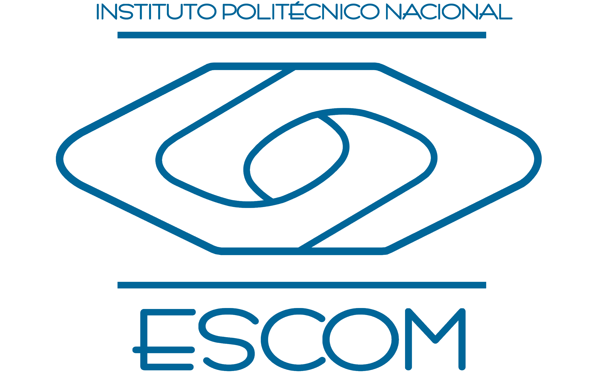
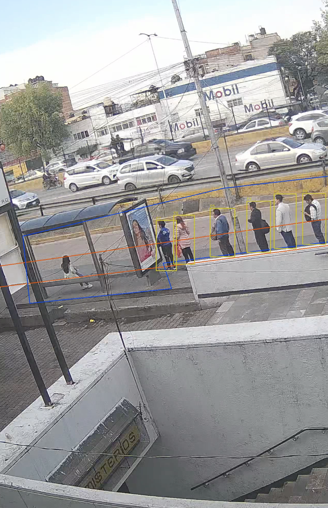
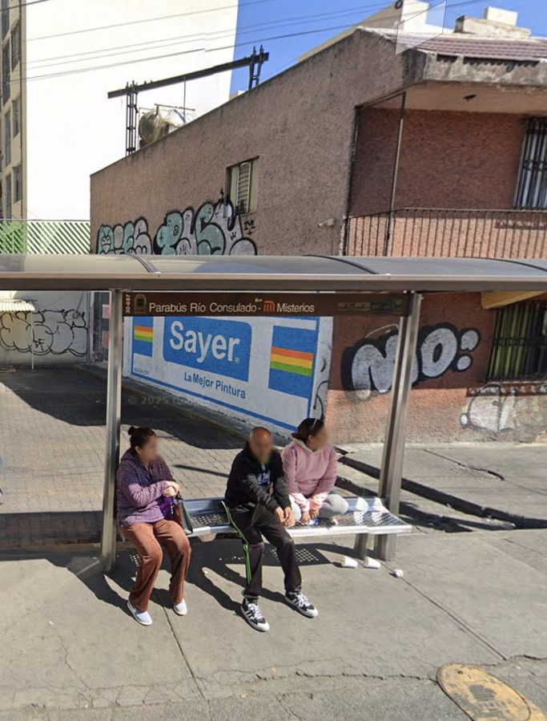
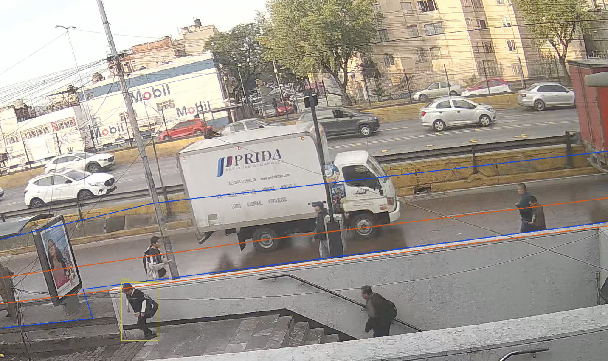
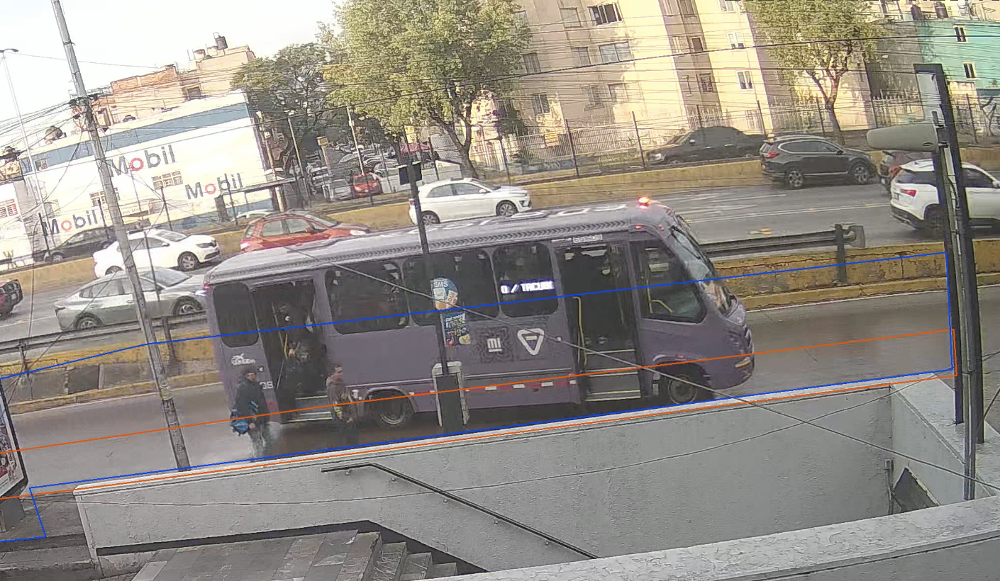
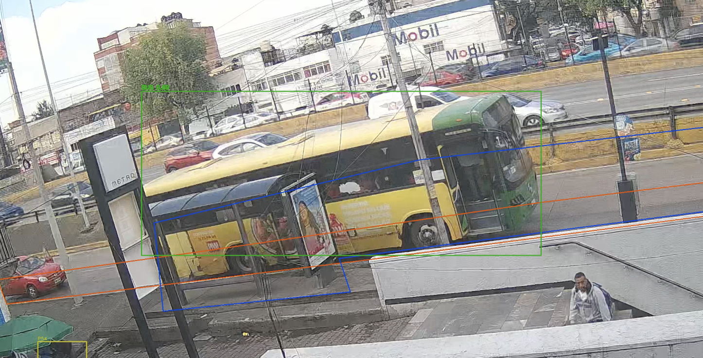
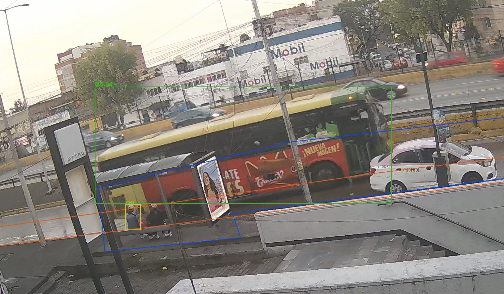
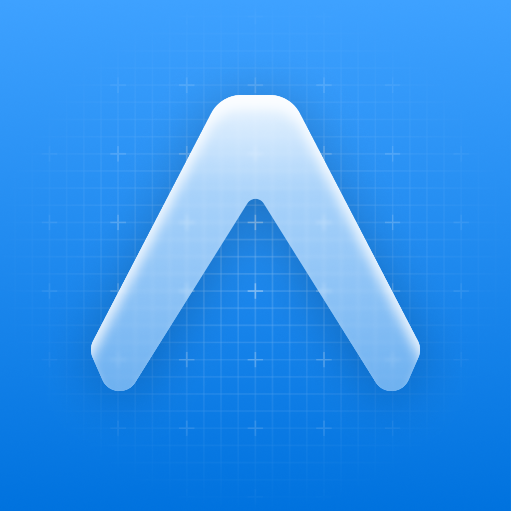

Escuela Superior de Cómputo
Trabajo Terminal II · No. 2026-B050
Predictor de llegada de autobuses urbanos con enfoque en datos históricos y ambientales
Presentación final del proyecto · cinco capas, una aplicación integrada.
Defensa final · TTIIMontiel García Cristian
Ortiz Martínez Yahir
Dra. Adriana Berenice Celis Dominguez
Dr. Juan Irving Vasquez Gómez
Tiempo orientativo: 20 segundos.
Guion
Presentar el proyecto y sus autores. Esta exposición recorre las cinco capas completas, distingue sus evidencias y termina con resultados y limitaciones. Alcance: estación Río Consulado–Misterios.
Fuente y alcance
IPN · ESCOM · Trabajo Terminal II · No. 2026-B050
Índice
Del problema a los resultados
Tiempo orientativo: 30 segundos.
Guion
Anunciar las nueve secciones, incluidas las referencias de TT1 y TT2. Las primeras capas resumen el trabajo de TT1 y preparan la explicación de modelo, backend, app y resultados. Los anexos están disponibles en cualquier momento sin interrumpir el recorrido principal.
Fuente y alcance
Organización integral del proyecto · índice navegable por capas.
Introducción
Contexto
usuarios anuales
Más de 9.4 millones de personas usan la Red de Corredores Concesionados de la ZMVM sin información de llegada en ninguna parada.
INEGI · enero 2025diarios perdidos en espera
De cada 93 minutos de traslado al día, 20 se pierden únicamente esperando que llegue el autobús.
SinEmbargo MX · 28 junio 2021califican la espera de molesta
1 de cada 3 usuarios describe la espera como molesta o muy molesta: un malestar cotidiano.
SinEmbargo MX · 28 junio 2021se queja de intervalos amplios
Las quejas por esperas excesivas pasaron de 14 % en 2018 a 60 % en 2022.
Evalúa CDMX · 2024perdidos al año esperando
Sumados al año, esos minutos de espera equivalen a casi una semana laboral completa.
SinEmbargo MX · 28 junio 2021reportan estrés en el trayecto
1 de cada 5 trabajadores de la CDMX reporta estrés durante sus traslados diarios al trabajo.
Gaceta UNAM · abril 2023Tiempo orientativo: 40 segundos.
Guion
Los seis indicadores se recuperan de la slide 03 de TT1, con sus fechas históricas. No son una actualización estadística a noviembre de 2026. El contador original de usuarios es 9,456,667 y el de días 3.6; se muestran completos desde que abre la diapositiva. Conectar los indicadores con la incertidumbre de la espera. Se conservan las referencias completas en anexos.
Fuente y alcance
TT1 · slide 03. Indicadores históricos de fuentes 2021–2025; referencias completas en anexos.
Introducción
Nuestra solución

"Usuarios en la estación Río Consulado–Misterios esperan sin ninguna información sobre la llegada del próximo autobús."
Jun. 2025 · Video CCTV
Consejo de Evaluación del Desarrollo Social de la CDMX. (2024). Informe de evaluación de movilidad 2024. Evalúa CDMX.
Solución diseñada
- 01Del video a los datosUso de metraje existente para crear un dataset histórico.
- 02Preparar el históricoExtracción de características y variables de los videos.
- 03Predecir con LSTMUso del dataset histórico creado para el entrenamiento de un modelo predictivo.
- 04Servir la predicciónVisualización de la predicción en una app móvil.
- 05Consultar y reportarPredicción disponible en tiempo real, en la estación Río Consulado-Misterios.
Tiempo orientativo: 30 segundos.
Guion
Se recupera la composición de la slide 04 de TT1: fotografía contextual a la izquierda, las cuatro causas raíz originales al centro y Solución diseñada a la derecha. El diagrama reúne en un solo rectángulo cinco pasos conectados: Del video a los datos, Preparar el histórico, Predecir con LSTM, Servir la predicción y Consultar y reportar. Las causas y su referencia se conservan como contexto histórico de TT1. El sistema no recibe detecciones en vivo de una cámara conectada al backend: aprende del histórico y utiliza reportes elegibles como información reciente.
Fuente y alcance
TT1 · slide 04: diseño y causas raíz originales. Solución actual resumida: TT2/23.
Introducción
Objetivos
Estimar la espera del próximo autobús con datos históricos y ambientales, validando el sistema en Río Consulado–Misterios.
Detectar buses y personas con YOLOv8m y ByteTrack.
Extraer llegadas y esperas del metraje de vigilancia.
Consolidar y enriquecer los CSV en SQLite.
Entrenar un LSTM con variables temporales y ambientales.
Meta MAE <5 min pendiente.Desplegar FastAPI en Cloud Run, con Firebase para datos y caché.
Consultar predicciones desde una app móvil con Expo y React Native.

Tiempo orientativo: 60 segundos.
Guion
Se resumen el objetivo general y los seis objetivos específicos para la exposición, conservando su estado individual. Por la elección del autor, OE-04 se marca parcialmente cumplido: el trabajo de entrenamiento e integración fue realizado y la meta de precisión permanece pendiente. El reporte v5, tabla 29, distingue realizado sin alcanzar la meta. Las siete variables contextuales forman parte de las 27 casillas de cada paso actual. La implementación móvil se ejecuta en Expo Go; no implica publicación en tiendas. Fuente de clima de OE-03: Zippenfenig, P. (2023), Open-Meteo.com Weather API, Zenodo, doi:10.5281/zenodo.7970649. Imagen de ubicación de la slide original: Río Consulado–Misterios, © Google Maps, Av. Río Consulado 1600, CDMX.
Fuente y alcance
TT1 · slide 05: objetivos resumidos. Estado: reporte técnico v5, tabla 29, p.57; TT2/23.
Introducción
Arquitectura del sistema
Del video a la predicción
Adquisición
Videos de la estación
Detección
Personas, buses y tiempos de espera
Dataset
Registros CSV e histórico para entrenar
Backend + ML
El LSTM estima la espera y FastAPI la devuelve
App móvil
Consultar predicción, historial y reportar la espera
Feedback: app → backend → contexto de futuras consultas.
Tiempo orientativo: 50 segundos.
Guion
Presentar las cinco responsabilidades. Las capas 4 y 5 están implementadas y el LSTM se publicó por excepción manual. La precisión alcanzada se muestra en resultados. Stack original: L1 Python, OpenCV y ffmpeg; L2 YOLOv8m, ByteTrack, supervision y PyTorch MPS; L3 SQLite3, Pandas, Open-Meteo y holidays; L4 FastAPI, GCP Cloud Run, Firebase, Keras/TensorFlow y Docker; L5 Expo y React Native para iOS/Android.
Fuente y alcance
TT1 · slide 06. Capas 4 y 5 implementadas según TT2/23 y reporte v5.
Capa 1: Adquisición
Adquisición de los datos
Configuración de captura
3840 × 2160 px · 4K · 15 fps
Río Consulado–Misterios · 19.4624, −99.1297
1 de cada 3 fotogramas → ≈5 fps efectivos.
Detalle de zonas
Polígono sobre la acera donde los usuarios esperan el bus.
Cuando su punto inferior-central entra.Polígono sobre el carril donde el bus concesionado se detiene.
Zona naranjaTiempo orientativo: 50 segundos.
Guion
Se conserva la distribución de la slide 07 de TT1: configuración y zonas a la izquierda, captura a la derecha. La adquisición reutiliza el metraje CCTV 4K a 15 fps. El detector analiza uno de cada tres fotogramas y utiliza imgsz=1280. setup_zones.py configura los polígonos una vez por ángulo de cámara y los guarda en zonas.json, con coordenadas nativas. ROI_PERSON delimita la acera y usa el punto inferior-central de la persona. ROI_BUS delimita la zona de parada; el análisis de color del bus utiliza la mitad superior de su caja por la perspectiva. Como información complementaria se explica la referencia temporal: fecha y hora del primer fotograma más tiempo transcurrido. La imagen procede de Personas-esperando-1.png, sin alteraciones.
Fuente y alcance
TT1: slide 07, 02-arquitectura-sistema.md §§1, 4 y configuración; 06-roi-zonas.md §§1, 4–5. Imagen: Resultados_YOLO/Capturas_Tomadas/Personas-esperando-1.png.
Capa 2: Modelo de detección
Detectar y confirmar llegadas de buses
Modelo de detección
Evolución del sistema
Problemas encontrados con DETR
- Umbral restrictivo (85 %)
- Transformer lento en el equipo
- Integración manual del tracker
- Exceso de falsos positivos
Por qué se migró a YOLOv8m
- Arquitectura de una pasada
- Umbral calibrado (25–30 %)
- ByteTrack con supervision
- Filtros específicos de clase
Filtrado de buses
conf ≥0.30 · W/H ≥1.8

Blanco/morado: rechazar al superar 15 %

Amarillo ≥8 % y verde ≥5 %

Permanencia ≥0.2 s · cooldown 130 s

Tiempo orientativo: 50 segundos.
Guion
Resumen de las slides 08 y 09 originales. Explicar por qué se cambió el detector dentro de este proyecto sin atribuir propiedades universales a DETR o YOLO. Los filtros verifican un bus objetivo en esta estación; no garantizan eliminar todo falso positivo. El cooldown evita volver a registrar un mismo bus. La perspectiva y las ROI forman parte de la decisión de llegada.
Fuente y alcance
TT1 · slides 08–09; documentos 03–06. Comparación histórica del pipeline.
Capa 2: Modelo de detección
Seguimiento, espera y validación de personas
Identidad y espera personal
ID-switch: si una persona desaparece y reaparece con otro ID a menos de 80 px y antes de 25 s, se recupera su ID original para evitar duplicados.
Fórmula del tiempo de espera
El max() garantiza que la espera comience en el momento más tardío: cuando llegó la persona o cuando terminó el abordaje del bus previo.
Salidas por video: CSV de esperas · JSON de eventos y cola · TXT de métricas · MP4 anotado opcional.
Tiempo orientativo: 50 segundos.
Guion
Resumen de las slides 10–13. ByteTrack conserva identidad; la recuperación usa distancia y tiempo para reducir cambios de ID. El carry-over enlaza personas entre clips cercanos. El max de la fórmula evita arrastrar la espera del bus anterior después de la ventana de abordaje. Se conservan solo esperas válidas entre 5 s y 45 min en este pipeline. Los 14 videos, 773 registros y porcentajes son la validación histórica descrita en TT1, no nuevas pruebas. El ejemplo manual compara 07:37:35 contra 07:38:07, nueve personas contra ocho y rangos de espera que se conservan completos en el anexo de validación.
Fuente y alcance
TT1 · slides 10–13, 8 reglas y validación histórica. Capa 2 resumida en dos diapositivas.
Capa 3: Dataset
Dataset (Esquema SQLite)
¿Por qué SQLite?
Se eligió porque permite consultas SQL y JOINs entre tablas a medida que el dataset crece de manera local.
eventos_espera
Tabla que guarda todas las personas que esperan el bus: cuándo llegó, cuándo llegó el bus y cuántos minutos esperó.
eventos_enriquecidos
Tabla que añade el contexto del momento: temperatura, lluvia, humedad y si era día festivo.
Tiempo orientativo: 70 segundos.
Guion
Se conserva todo el contenido de la slide 14 de TT1. Nueve campos corresponden al CSV base; SQLite agrega id y video_source según el esquema completo. eventos_enriquecidos utiliza el mismo id y la exportación selecciona doce columnas. El campo waiting_time_min es la espera histórica personal; al preparar el predictor de próximo bus se deriva otro objetivo para cada consulta, explicado a continuación. Referencia original: Hipp, R. D. (2024). SQLite [Software]. https://www.sqlite.org.
Fuente y alcance
TT1 · slide 14 íntegra en contenido; documentos 08–09. Hipp, R. D. (2024), SQLite.
Capa 3: Dataset
Resultados de la recopilación del dataset
Río Consulado–Misterios · 1–31 de octubre de 2025 · 31 jornadas.
Datos recopilados
Los intervalos intradiarios son los tiempos transcurridos entre dos llegadas consecutivas de buses dentro del mismo día.
Tiempo orientativo: 60 segundos.
Guion
El documento 21 reúne 283 CSV de las 31 jornadas de octubre de 2025, con 5,126 registros: 5,014 filas personales y 112 centinelas. Al agrupar las filas del mismo bus se identifican 471 llegadas distintas y 440 intervalos intradiarios. Una centinela registra una llegada sin espera personal observada. Las 24,938 consultas se derivan por minuto dentro de la cobertura continua de cada jornada, aproximadamente 804 minutos diarios; no son usuarios adicionales ni solicitudes reales. La imagen original del dataset se presenta en la siguiente slide. Los conteos documentales no acreditan una nueva reconstrucción o evaluación mensual, pendientes según el documento 21.
Fuente y alcance
TT2/21 §1, Qué se conservó y cómo se crearon los ejemplos. Evidencia aportada: Testeo_Real/Foto-dataset-0.png.
Capa 3: Dataset
Evidencia del dataset final creado
Tiempo orientativo: 30 segundos.
Guion
Imagen original del dataset final, como evidencia de los registros y sus campos de espera, calendario, clima y video de origen. Complementa los conteos presentados en la slide 11.
Fuente y alcance
Evidencia proporcionada: Testeo_Real/Foto-dataset-0.png.
Capa 4: Modelo predictivo y Backend
Cómo se entrena el modelo y qué aprende a predecir
Tiempo hasta el próximo bus
Predice los minutos que faltan desde la consulta hasta el siguiente bus, dentro de la cobertura comprobada.
De las llegadas a cada consulta
Reunir los CSV de cada jornada
Se trabaja por día, sin unir jornadas distintas.
Agrupar y ordenar las llegadas
Varios registros del mismo bus cuentan como una llegada.
Comprobar continuidad
Conservar solo tramos verificados; excluir los demás.
Crear una consulta por minuto
Entre la primera y la última llegada del tramo continuo.
Entrada X
Contexto e historial disponibles al consultar.
Objetivo y
Minutos hasta el siguiente bus.
Entrenar con jornadas anteriores y validar en posteriores. La llegada futura nunca entra en X.
Tiempo orientativo: 60 segundos.
Guion
Comenzar por el objetivo: minutos que faltan desde la consulta hasta la primera llegada no anterior a ella. Diferenciar ese tiempo restante de la espera personal histórica. Después recorrer video, detecciones, CSV, agrupación de llegadas y consultas por minuto dentro de continuidad comprobada. Varias personas pueden corresponder a un mismo bus. La llegada futura calcula la respuesta correcta y no se entrega al modelo.
Fuente y alcance
TT2/21: objetivo de próximo bus. TT2/22 §1; diagrama de extracción completo en anexos.
Capa 4: Preparación de entradas
Entrada X (27 casillas)
Cada paso es una ficha con 27 números en posiciones fijas: datos conocidos, disponibilidad y origen de la espera.
Contexto de la consulta
Siete datos describen el momento de cada ficha.
| Dato | Contenido | Disponible |
|---|---|---|
| 01 | Hora local decimal | 08 |
| 02 | Día: lunes 0 → domingo 6 | 09 |
| 03 | Fin de semana: sí / no | 10 |
| 04 | Festivo: sí / no | 11 |
| 05 | Precipitación (mm) | 12 |
| 06 | Temperatura (°C) | 13 |
| 07 | Humedad (%) | 14 |
Disponibilidad de las casillas anteriores:
1 = conocido, 0 = ausente
Espera y buses conocidos
Espera histórica o promedio de respaldo en relación con la próxima llegada del bus, en minutos.
16Indica si esa espera está disponible.
| Dato | Contenido en minutos | Disponible |
|---|---|---|
| 17 | Desde la última llegada conocida | 21 |
| 18 | Intervalo más reciente | 22 |
| 19 | Segundo intervalo anterior | 23 |
| 20 | Tercer intervalo anterior | 24 |
Casillas 17–20: Guarda solo llegadas de bus reportadas desde el feedback de la app, ya disponibles al horario de la ficha.
Casillas 21–24: Indica si se conoce cada una de las casillas anteriores.
Origen de la espera
Las casillas representan el estado de la casilla 15:
Observada: procede de un reporte válido.
26Respaldo: procede de un promedio histórico.
27Ausente: no se conoce la espera.
En una ficha válida, solo uno de estos tres indicadores vale 1.
Tiempo orientativo: 60 segundos.
Guion
Una ficha contiene 27 valores, no 27 personas ni 27 predicciones. Las posiciones 1 a 7 guardan calendario y clima; 8 a 14 indican si cada dato se conoce. La 15 guarda una espera histórica o un promedio de respaldo y la 16 su disponibilidad. Las posiciones 17 a 20 resumen buses conocidos: tiempo desde la última llegada y tres intervalos anteriores; 21 a 24 indican su disponibilidad. Las últimas tres distinguen si la espera es observada, un respaldo o está ausente. En un paso válido solo se activa uno de esos orígenes. El relleno completo tiene todos sus valores y su máscara en cero. La consulta actual sigue siendo válida aunque no se conozca su espera. La llegada futura es el objetivo y, no una entrada X. El modelo recibe 30 fichas y una máscara separada de 30 indicadores.
Fuente y alcance
TT2/21 · Distribución fija de las 27 casillas de cada ficha · contrato arribo-next-bus-feedback-v1.
Capa 4: Preparación temporal
División de datos para entrenamiento, validación y retrospectiva
La división 1–17 / 18–24 / 25–31 se aplicó exclusivamente al mes completo de octubre de 2025, extraído de los videos para conformar el dataset final. Este alcance se fijó por las limitaciones computacionales y la proximidad de la entrega del proyecto. Además, se tomo esta división para conservar jornadas completas y una semana por bloque de evaluación.
¿Qué es la retrospectiva? Según Leonard J. Tashman (2000), la retrospectiva es evaluar con registros históricos posteriores al entrenamiento, como si las consultas ocurrieran entonces, usando solo la información disponible actual de esa consulta. Sirve para comprobar si el modelo elegido con la validación mantiene su desempeño en jornadas posteriores.
Tiempo orientativo: 50 segundos.
Guion
El diseño contiene 13,661 consultas de entrenamiento, 5,638 de validación y 5,639 retrospectivas. Las 17/7/7 jornadas mantienen semanas completas de evaluación. Un 70/15/15 también podría ser cronológico: aquí se prioriza cobertura semanal. El documento 21 indica que las matrices mensuales y la ejecución de la retrospectiva de estas referencias siguen pendientes; el paquete original tiene otro antecedente temporal. Mantener la distinción documental en el pie, sin atribuir al paquete la partición de diseño.
Fuente y alcance
TT2/21 · diseño mensual y ejecución pendiente. Figura 01 de assets-corregidos.
Capa 4: Modelo de referencia
XGBoost como referencia
XGBoost combina árboles de decisión que corrigen errores anteriores. Se ajustan profundidad, árboles y tasa de aprendizaje.
XGBoost: Comparación
Se compararon 22 configuraciones: 12 controles de 10 pasos y cinco combinaciones para cada ventana de 20 y 30 pasos.
Configuraciones probadas:
| Config. | Profundidad | Árboles | Tasa |
|---|---|---|---|
| A | 2 | 200 | 0.05 |
| B | 2 | 400 | 0.03 |
| C | 4 | 200 | 0.05 |
| D | 4 | 400 | 0.1 |
| E | 6 | 400 | 0.03 |
Porque logró el menor MAE operativo de validación: 24.808 min, en la comparación documentada.
Resultados por escenario
Validación del 18–24 de octubre:
| Pasos / config. | Con feedback | Sin feedback | ||||
|---|---|---|---|---|---|---|
| MAE | RMSE | R² | MAE | RMSE | R² | |
| 10/A | 26.383 | 30.723 | 0.229 | 19.185 | 24.444 | 0.512 |
| 20/A | 24.808 | 28.832 | 0.321 | 19.418 | 24.741 | 0.500 |
| 20/B | 25.717 | 29.669 | 0.281 | 19.264 | 24.545 | 0.508 |
| 20/C | 27.279 | 31.877 | 0.170 | 23.165 | 29.515 | 0.288 |
| 20/D | 27.745 | 33.157 | 0.102 | 25.062 | 31.932 | 0.167 |
| 20/E | 32.633 | 38.694 | -0.223 | 26.299 | 33.508 | 0.083 |
| 30/A | 25.850 | 29.420 | 0.293 | 19.560 | 24.922 | 0.493 |
| 30/B | 26.151 | 30.017 | 0.264 | 19.249 | 24.526 | 0.509 |
| 30/C | 28.545 | 33.322 | 0.093 | 22.397 | 28.537 | 0.335 |
| 30/D | 29.883 | 34.584 | 0.023 | 25.815 | 32.892 | 0.116 |
| 30/E | 32.889 | 36.040 | -0.061 | 25.655 | 32.688 | 0.127 |
MAE y RMSE en minutos. Con feedback: 50 % de reportes y 5 min de demora..
Tiempo orientativo: 60 segundos.
Guion
La búsqueda documentada incluye controles de 10 pasos y comparaciones de 20 y 30. Se muestran los mejores resultados operativos por ventana. Los árboles reciben 20 fichas de 27 valores y 20 indicadores de paso; se aplana sin promediar. Se emplea reg:squarederror, método hist y una semilla. Se seleccionó por menor MAE operativo, después MAE sin feedback y complejidad. Las métricas son referencias documentales del diseño, no nuevas ejecuciones de esta presentación.
Fuente y alcance
TT2/21 §3 · referencia XGBoost y reglas comunes. Tabla completa en anexos.
Capa 4: Selección del modelo
Elección del modelo LSTM
LSTM es una red neuronal con memoria: procesa el historial en orden y aprende qué información conservar para estimar los minutos hasta el próximo bus.
24 configuraciones LSTM
Se cruzaron 10, 20 y 30 pasos con estas ocho combinaciones: 24 configuraciones en total.
| Config. | Unidades | Optimizador | Tasa |
|---|---|---|---|
| A | 16 | Adam | 0.001 |
| B | 16 | Adam | 0.0003 |
| C | 16 | RMSprop | 0.001 |
| D | 16 | RMSprop | 0.0003 |
| E | 32 | Adam | 0.001 |
| F | 32 | Adam | 0.0003 |
| G | 32 | RMSprop | 0.001 |
| H | 32 | RMSprop | 0.0003 |
Reglas comunes: Hasta 50 épocas, sin barajar y parada tras 6 épocas sin mejora; se recuperan los mejores pesos.
Por menor MAE operativo: 15.150 min.
Priorizar la utilidad operativa
| Pasos / config. | Con feedback | Sin feedback | ||||
|---|---|---|---|---|---|---|
| MAE | RMSE | R² | MAE | RMSE | R² | |
| 10/A | 16.789 | 21.483 | 0.623 | 17.122 | 23.466 | 0.550 |
| 10/B | 21.126 | 24.741 | 0.500 | 20.581 | 28.208 | 0.350 |
| 10/C | 20.815 | 24.716 | 0.501 | 21.181 | 29.030 | 0.312 |
| 10/D | 19.443 | 23.523 | 0.548 | 18.992 | 26.030 | 0.447 |
| 10/E | 17.492 | 22.184 | 0.598 | 16.786 | 23.006 | 0.568 |
| 10/F | 18.850 | 23.756 | 0.539 | 19.051 | 26.111 | 0.443 |
| 10/G | 18.490 | 24.038 | 0.528 | 18.718 | 25.654 | 0.462 |
| 10/H | 17.136 | 22.294 | 0.594 | 17.567 | 24.076 | 0.526 |
| 20/A | 16.452 | 21.653 | 0.617 | 19.722 | 27.030 | 0.403 |
| 20/B | 20.779 | 24.691 | 0.502 | 19.989 | 27.396 | 0.387 |
| 20/C | 18.465 | 23.627 | 0.544 | 16.504 | 22.619 | 0.582 |
| 20/D | 19.028 | 23.129 | 0.563 | 18.123 | 24.839 | 0.496 |
| 20/E | 16.482 | 21.540 | 0.621 | 16.423 | 22.508 | 0.586 |
| 20/F | 20.411 | 24.341 | 0.516 | 19.430 | 26.630 | 0.421 |
| 20/G | 17.743 | 23.156 | 0.562 | 20.042 | 27.469 | 0.384 |
| 20/H | 17.006 | 22.376 | 0.591 | 20.337 | 27.873 | 0.365 |
| 30/A | 16.501 | 21.196 | 0.633 | 16.094 | 22.057 | 0.603 |
| 30/B | 20.751 | 24.517 | 0.509 | 21.065 | 28.871 | 0.319 |
| 30/C | 19.406 | 24.417 | 0.513 | 17.665 | 24.211 | 0.521 |
| 30/D | 19.342 | 23.730 | 0.540 | 19.316 | 26.474 | 0.427 |
| 30/E | 19.064 | 23.314 | 0.556 | 17.437 | 23.898 | 0.533 |
| 30/F | 17.998 | 22.943 | 0.570 | 14.798 | 20.281 | 0.664 |
| 30/G | 15.150 | 20.758 | 0.648 | 18.320 | 25.109 | 0.485 |
| 30/H | 16.615 | 22.729 | 0.578 | 18.953 | 25.976 | 0.449 |
Validación 18–24 oct. · promedio de 3 semillas.
Tiempo orientativo: 70 segundos.
Guion
Una LSTM aprende qué conservar del historial ordenado para estimar la espera hasta el próximo bus. Se compararon tres ventanas y ocho combinaciones de unidades, optimizador y tasa, manteniendo la densa de 16 y las reglas de entrenamiento. Cada letra identifica la misma combinación en las tres ventanas. La tabla muestra las 24 configuraciones de validación con y sin feedback, promediadas en tres semillas. Se eligió 30/G por su menor MAE operativo: 15.150 minutos; RMSE 20.758 y R² 0.648. Sin feedback obtiene 18.320, 25.109 y 0.485; no es la mejor configuración en ese escenario. Son referencias documentales del diseño; la reconstrucción y evaluación mensual siguen pendientes.
Fuente y alcance
TT2/21 §2 · comparación de 24 configuraciones LSTM y criterio de selección. Las cifras no son nuevas mediciones de producción.
Capa 4: Entrada y arquitectura
Qué recibe y qué aprende el LSTM
30 pasos × 27 casillas
Del historial a los minutos
Matriz 30 × 27: 30 pasos ordenados, cada una con las mismas 27 casillas de contexto, espera, buses y disponibilidad.
Consulta actual: ocupa el último paso; contiene el contexto conocido, pero no la espera futura que se quiere predecir.
Historial y respaldos: hasta 29 pasos anteriores dentro de dos horas. Se usan reportes válidos ya recibidos; si faltan, promedios históricos de entrenamiento, sin inventar clima ni llegadas.
Máscaras: dentro de cada paso indican qué datos se conocen. Aparte, 30 indicadores marcan pasos válidos (1) o relleno que el LSTM omite (0).
Resume los 30 pasos de entrada en una secuencia de 32 unidades recurrentes (neurona que procesa una secuencia conservando información de los pasos anteriores) y así encontrar patrones en los pasos válidos
Combina ese resumen en 16 neuronas, cada neurona aprende una combinación distinta; ReLU pone en cero los valores negativos.
Minutos hasta el siguiente bus
Tiempo orientativo: 80 segundos.
Guion
Se agrupan 7 contextos + 7 disponibilidades + espera y disponibilidad + 4 señales de buses y sus disponibilidades + 3 banderas de origen: 27. El paso actual no contiene su espera futura. La LSTM aprende un resumen interno del historial; sus 32 unidades no son registros de usuarios. La densa combina ese resumen con 16 neuronas y ReLU deja pasar activaciones positivas. La salida es lineal y devuelve minutos. Los promedios de métricas no son la precisión del paquete individual ni probabilidades.
Fuente y alcance
TT2/17, 21 y 23 · 30 × 27, máscara separada y LSTM 32 → densa 16 → salida.
Capa 4: Comparación de modelos
Comparación de XGBoost y LSTM
MAE: diferencia absoluta media entre minutos predichos y minutos reales. RMSE: mide cuánto se equivoca el modelo, mayor peso a errores grandes. R²: qué tan bien predice el modelo comparado con el promedio histórico
Lectura de la comparación
Con reportes, el MAE de LSTM es 38.93 % menor que el de XGBoost.
Sin feedback, LSTM tiene menor MAE; XGBoost obtiene mejores RMSE y R².
XGBoost tiene un mejor rendimiento en estas dos métricas:
RMSE menor: 24.741 frente a 25.109 min.
R² mayor: 0.500 frente a 0.485.
Los árboles podrían aprovechar mejor los respaldos históricos y reducir errores grandes.
Las métricas por sí solas no demuestran esa causa. LSTM conserva el menor MAE.
Tiempo orientativo: 70 segundos.
Guion
Comparar los mismos objetivos del escenario operativo. LSTM tiene MAE documental 38.93 % menor que XGBoost y 66.13 % menor que el histórico. Sin feedback conserva menor MAE que XGBoost, pero mayor RMSE y menor R². MAE expresa diferencia absoluta media; RMSE da más peso a errores grandes; R² compara el error cuadrático con la media del bloque. Son referencias de diseño documentadas: LSTM resume tres semillas y XGBoost una. La figura completa con retrospectiva se conserva en anexos con el estado de evaluación pendiente.
Fuente y alcance
Adaptación de 02-comparacion-modelos: foco en validación. TT2/21 §5 y TT2/22 §3.
Capa 4: Comparación de escenarios
Efecto del feedback en los modelos
MAE con reportes respecto a operar sin ellos.
MAE con reportes, a comparación de operar sin ellos.
Tiempo orientativo: 50 segundos.
Guion
Los reportes reducen 17.30 % el MAE documental LSTM frente al caso sin feedback; en XGBoost lo aumentan 27.76 %. El efecto no es una propiedad universal del feedback ni una mejora medida con usuarios desplegados. El escenario reproduce disponibilidad de 50% y recepción con cinco minutos de demora. Las mejoras relativas del error medio no representan probabilidad de acertar.
Fuente y alcance
TT2/22 §3 · 03-efecto-feedback.png. Escenario de reportes reproducidos documentalmente.
Capa 4: Mecanismo A
Mecanismo A: Feedback de la app
Es un mecanismo que aprovecha los reportes recientes para preparar la entrada del LSTM, sin cambiar sus pesos.
Construir el contexto de cada consulta
Reportes disponibles
Aprovecha los reportes recientes válidos enviados desde la app para construir hasta 29 fichas históricas de la entrada del LSTM; las posiciones restantes se completan con respaldos o relleno, y se marca ese paso para que el LSTM lo ignore o lo tome en cuenta.
Tiempo orientativo: 60 segundos.
Guion
Hasta 29 reportes históricos más la consulta actual, misma estación y últimas dos horas. Solo se consideran reportes ya recibidos y esperas confirmadas. Las llegadas derivadas de reportes se agrupan como buses probables; varios reportes de un bus no son varias llegadas. Cuando falta historial se usan respaldos congelados del paquete o relleno identificado. A cambia las entradas y conserva los pesos.
Fuente y alcance
TT2/23 §4 y TT2/21 · causales, respaldos y ventana de dos horas.
Capa 4: Persistencia
Firestore: qué guarda la aplicación
Cinco colecciones, responsabilidades distintas
Tiempo orientativo: 40 segundos.
Guion
Explicar los cinco tipos de datos sin leer todos los campos. Los promedios de respaldo están en metadata.json del paquete, no en una colección de reportes. La app no lee directamente la caché predictions. El contexto del feedback se obtiene de la consulta original y el mismo identificador permite reintentar sin duplicar. Un dato externo ausente se conserva como desconocido; tráfico y contingencias pueden almacenarse sin ser entradas actuales del modelo.
Fuente y alcance
TT2/15, 18 y 23. Reporte v5, figura 3 y apartado Esquema de Firestore.
Capa 5: App Móvil
Demostración de la app

Consulta · contador · historial · reporte
Espacio reservado para tu video · hasta 90 segundos
Tiempo orientativo: 90 segundos.
Guion
Video proporcionado por el autor: Video de la app.mov, incorporado mediante una copia MP4 compatible. Muestra la demostración de la app; duración aproximada de 36 segundos.
Fuente y alcance
Video de la app.mov proporcionado por el autor · aplicación Expo Go.
Resultados
Qué significa acertar en nuestro sistema
Una consulta es exitosa si la estimación se aleja como máximo 20 minutos de la espera real. Se comprueba después de conocer la llegada del bus.
Tolerancia de ±20 minutos
MAE operativo de 15.15 min
¿Cómo se obtiene la probabilidad de éxito?
- Reune consultas reales comparables por horario, reportes disponibles y espera estimada.
- Cuenta cuántas cumplen la tolerancia de ±20 minutos.
- Comprueba la frecuencia obtenida en nuevas jornadas independientes.
De los aciertos a una frecuencia
Con espera real conocida.
Su error no supera los 20 minutos.
Una referencia para consultas similares.
Tiempo orientativo: 60 segundos.
Guion
Primero definimos el éxito: el error absoluto de la estimación no debe superar 20 minutos, incluida la igualdad. Solo puede comprobarse al conocer la espera real; la tolerancia no es una garantía del modelo. El LSTM devuelve minutos y el backend un rango basado en errores de validación, no una probabilidad individual. MAE, RMSE y R² tampoco equivalen a esa probabilidad. La frecuencia de acierto cuenta los éxitos de un conjunto evaluado. Para estimar la probabilidad de una nueva consulta se necesitan suficientes casos reales comparables y comprobar la calibración en jornadas independientes. Esto aún no es una función implementada de la app y no exige modificar los pesos del LSTM.
Fuente y alcance
TT2/22 §4, §6 y §8 · tolerancia del análisis y evaluación complementaria pendiente.
Resultados
18 casos testeados
| Caso / día | Consulta | Espera | Estimación | Error ± | Éxito | Cercanía relativa (%) |
|---|---|---|---|---|---|---|
| C01 · jueves 23 | 08:39:47 | 7.650 | 27.899 | +20.249 | No | 27.42 |
| C02 · jueves 23 | 09:02:07 | 7.350 | 18.441 | +11.091 | Sí | 39.86 |
| C03 · jueves 23 | 09:23:26 | 6.433 | 10.397 | +3.964 | Sí | 61.87 |
| C04 · viernes 24 | 05:22:32 | 8.150 | 15.407 | +7.257 | Sí | 52.90 |
| C05 · viernes 24 | 05:41:20 | 5.017 | 12.911 | +7.894 | Sí | 38.86 |
| C06 · viernes 24 | 06:08:13 | 5.967 | 14.826 | +8.859 | Sí | 40.25 |
| C07 · viernes 24 | 06:53:12 | 14.983 | 35.971 | +20.988 | No | 41.65 |
| C08 · sábado 25 | 14:22:35 | 100.467 | 81.011 | -19.456 | Sí | 80.63 |
| C09 · sábado 25 | 14:38:01 | 85.033 | 63.862 | -21.171 | No | 75.10 |
| Caso / día | Consulta | Espera | Estimación | Error ± | Éxito | Cercanía relativa (%) |
|---|---|---|---|---|---|---|
| C10 · sábado 25 | 16:03:12 | 102.767 | 27.655 | -75.112 | No | 26.91 |
| C11 · domingo 26 | 10:19:42 | 6.567 | 15.267 | +8.700 | Sí | 43.01 |
| C12 · domingo 26 | 10:48:11 | 21.750 | 36.160 | +14.410 | Sí | 60.15 |
| C13 · domingo 26 | 11:04:52 | 5.067 | 21.581 | +16.514 | Sí | 23.48 |
| C14 · domingo 26 | 11:25:18 | 5.417 | 9.040 | +3.623 | Sí | 59.92 |
| C15 · domingo 26 | 11:59:44 | 39.033 | 60.065 | +21.032 | No | 64.98 |
| C16 · lunes 27 | 18:27:52 | 49.750 | 67.927 | +18.177 | Sí | 73.24 |
| C17 · lunes 27 | 19:08:20 | 9.283 | 29.428 | +20.145 | No | 31.54 |
| C18 · lunes 27 | 19:58:23 | 48.233 | 89.314 | +41.081 | No | 54.00 |
Tiempo orientativo: 80 segundos.
Guion
Las llegadas objetivo proceden de los CSV y las estimaciones fueron construidas para el ejercicio sin feedback; no son nuevas inferencias del LSTM. Una consulta acierta cuando su error absoluto no supera los 20 minutos. Las tablas muestran los 18 casos. Sus valores publicados producen MAE 18.8735, RMSE 24.817844 y R² 0.440957, mostrados con redondeo decimal. La fila resumen del documento 22 no coincide con su detalle; se usan las filas y se registra la discrepancia. No se fuerzan los datos para obtener las métricas de referencia. C10 tiene el mayor error, 75.112 minutos.
Fuente y alcance
TT2/22 §4 y §5C · casos C01–C18 del ejercicio ilustrativo y métricas recalculadas.
Resultados
Aciertos con tolerancia de ±20 minutos
aciertos
61.11 %dentro de ±20 minutos.
| Tolerancia | Aciertos |
|---|---|
| ±10 min | 6/18 |
| ±15 min | 8/18 |
| ±20 min | 11/18 |
| ±25 min | 16/18 |
Tiempo orientativo: 45 segundos.
Guion
Son 11 de 18 aciertos con ±20: 61.11 %. Antes de las 12:00, 9 de 12; desde las 12:00, 2 de 6. Las tolerancias ±10, ±15 y ±25 dan 6, 8 y 16 aciertos. Cambiar el umbral no mejora la predicción: cambia el criterio usado para contar. La tolerancia de 20 minutos es amplia cuando la espera verdadera es breve.
Fuente y alcance
TT2/22 §5D · 06-perfiles-y-aciertos.png, versión actualizada.
Resultados
Error por día y horario
Tiempo orientativo: 45 segundos.
Guion
El MAE del ejercicio es 12.048 minutos antes de las doce y 32.524 desde el mediodía. El sábado tiene mayor MAE, influido por C10. La distribución de fallos vespertinos forma parte del diseño: los intervalos largos motivan una hipótesis, pero estos casos no demuestran una causa ni el comportamiento general del LSTM. El anexo de errores horarios documentales también muestra dificultades matutinas.
Fuente y alcance
TT2/22 §5F · 10-error-por-dia-y-horario.png, versión actualizada.
Resultados
Consulta documentada en la estación
Consulta en Río Consulado–Misterios
de diferencia en esta observación
Caso real · cercanía relativa: 92.70 %. 100 × 33 ÷ 35.6, con 35.6 min estimados y 33 min reportados. Describe la cercanía entre ambos tiempos; no es una probabilidad de éxito.
Tiempo orientativo: 40 segundos.
Guion
Usar las dos capturas auténticas extraídas del reporte v5, página 56. El LSTM estimó 35.6 minutos y se reportaron 33: sobreestimación de 2.6. El historial vincula la consulta al reporte enviado. La pantalla indicaba clima no disponible. Este caso confirma el recorrido funcional y es un acierto bajo la tolerancia elegida, pero no estima precisión poblacional.
Fuente y alcance
TT2/23 §6 y reporte técnico v5, figuras 32–33, p.56. Observación individual.
Conclusiones
Viabilidad económica
Plan comercial: Formalizar el piloto con SEMOVI/C5 y ampliar el servicio mediante licencias por estación.
Licencias por estación
La cuota cubre operación, reentrenamiento, soporte y un tablero de indicadores.
Premium: $29/mes · publicidad y patrocinios · datos agregados y anonimizados: $5,000/mes.
Construir el sistema
| Desarrollo: 2 personas × 10 meses × $40,000 | $800,000 |
| Equipo de cómputo y dispositivo de prueba | $50,000 |
| Procesamiento de videos y servicios en la nube | $10,000 |
| Cuentas de desarrollador y registro de marca | $10,000 |
| Imprevistos: 10 % de $870,000 | $87,000 |
| Total estimado | $957,000 |
Ventaja económica: aprovecha cámaras existentes, sin instalar GPS en cada autobús.
Costo mensual de infraestructura
| Escenario | Total mensual | Por estación |
|---|---|---|
| 1 estación | $1,100 | $1,100 |
| 5 estaciones | $3,500 | $700 |
| 30 estaciones | $15,000 | $500 |
Incluye nube, APIs y cuentas/dominio; no salarios. Agregar estaciones requiere procesar metraje y entrenar su modelo.
Recuperación hacia el año 2
Resultados anuales estimados, con salarios y operación incluidos. El flujo acumulado recupera la inversión hacia el cierre del segundo año.
Alternativa: venta total del proyecto por $1.9 M.
Tiempo orientativo: 60 segundos.
Guion
El plan económico comienza por formalizar el piloto con el Gobierno de la Ciudad de México, en particular SEMOVI y C5. La línea principal es una licencia por estación: 60,000 pesos de implementación y 10,000 mensuales por operación, reentrenamiento, soporte y tablero. Se complementa con Premium de 29 pesos mensuales, publicidad y datos anonimizados por 5,000 mensuales. Los 957,000 pesos estiman lo que costaría contratar la construcción, no el gasto efectivamente realizado: se emplearon equipos propios y herramientas abiertas. La infraestructura mensual se estima en 1,100, 3,500 y 15,000 pesos para 1, 5 y 30 estaciones; no incluye salarios. La proyección comercial sí los incluye y plantea resultados anuales de menos 110,000, más 1,190,000 y más 3,520,000 pesos, con recuperación acumulada hacia el cierre del segundo año. Son escenarios del reporte, condicionados a ventas y adopción institucional. La venta total por 1.9 millones es una alternativa, no un ingreso actual.
Fuente y alcance
TT2_Reporte_Tecnico_v6.pdf · Viabilidad económica, pp.59–63; tablas 31–33. Estimaciones del documento con tipo de cambio de referencia de 18.5 MXN/USD.
Conclusiones
Cinco capas integradas.
La precisión aún puede mejorar.
Integración funcional lograda
Video → dataset → LSTM → FastAPI en GCP → app con historial y feedback.
Resultados de validación del LSTM
Con reportes: MAE 15.150 min · RMSE 20.758 min · R² 0.648.
Sin feedback: MAE 18.320 min · RMSE 25.109 min · R² 0.485.
Límites del sistema actual
Una estación, datos de octubre y app en Expo Go. La meta MAE <5 min sigue pendiente; el modelo se publicó por excepción manual. La mejora con feedback real aún debe medirse.
Próximas mejoras
Ampliar jornadas y reportes reales, evaluar con datos independientes y calibrar la probabilidad de éxito.
Aprovechar el entrenamiento mensual y aprobar nuevos modelos tras revisar sus resultados.
Tiempo orientativo: 45 segundos.
Guion
El proyecto integra las cinco capas: extracción de eventos, preparación del dataset, modelo predictivo, backend y aplicación con historial y reportes. Las referencias de validación con reportes son MAE 15.150, RMSE 20.758 y R² 0.648; sin feedback, 18.320, 25.109 y 0.485. Estas cifras no acreditan precisión con usuarios en producción. El modelo vigente se publicó por excepción manual y la meta MAE menor de cinco minutos sigue pendiente. El alcance se limita a una estación, datos de octubre y app en Expo Go. Se requieren más datos y evaluación independiente para medir el efecto del feedback y calibrar confiabilidad. El mecanismo A modifica entradas, no pesos; el B programa entrenamiento mensual, y publicar un nuevo modelo requiere revisión y aprobación manual.
Fuente y alcance
TT2/23 §1–6 · integración, métricas de validación, alcance y mecanismos A/B. Diseño adaptado de TT1, slide 20/21.
Referencias
Fuentes consultadas
Fuentes del proyecto completo
Jocher, G., Chaurasia, A., & Qiu, J. (2023). Ultralytics YOLO (v8.0.0) [Software]. Ultralytics. https://github.com/ultralytics/ultralytics
Carion, N., Massa, F., Synnaeve, G., Usunier, N., Kirillov, A., & Zagoruyko, S. (2020). End-to-end object detection with transformers. Lecture Notes in Computer Science, 12346, 213–229. https://doi.org/10.1007/978-3-030-58452-8_13
Zhang, Y., Sun, P., Jiang, Y., Yu, D., Weng, F., Yuan, Z., Luo, P., Liu, W., & Wang, X. (2022). ByteTrack: Multi-object tracking by associating every detection box. Lecture Notes in Computer Science, 13682, 1–21. https://doi.org/10.1007/978-3-031-20047-2_1
Dwyer, B., Nelson, J., & Solawetz, J. (2022). Supervision [Software]. Roboflow. https://github.com/roboflow/supervision
Bradski, G. (2000). The OpenCV library. Dr. Dobb's Journal of Software Tools, 25, 120–123.
Hochreiter, S., & Schmidhuber, J. (1997). Long short-term memory. Neural Computation, 9(8), 1735–1780. https://doi.org/10.1162/neco.1997.9.8.1735
Chen, T., & Guestrin, C. (2016). XGBoost: A scalable tree boosting system. Proceedings of KDD, 785–794. https://doi.org/10.1145/2939672.2939785
Abadi, M., et al. (2016). TensorFlow: A system for large-scale machine learning. Proceedings of OSDI, 265–283.
Chollet, F., et al. (2015). Keras [Software]. https://keras.io
Tieleman, T., & Hinton, G. (2012). Lecture 6.5—RMSProp. Neural Networks for Machine Learning. Coursera.
Pedregosa, F., et al. (2011). Scikit-learn: Machine learning in Python. Journal of Machine Learning Research, 12, 2825–2830.
Tashman, L. J. (2000). Out-of-sample tests of forecasting accuracy: An analysis and review. International Journal of Forecasting, 16(4), 437–450.
Ramírez, S. (s. f.). FastAPI [Documentación]. https://fastapi.tiangolo.com
Google Cloud. (s. f.). Cloud Run documentation. https://cloud.google.com/run/docs
Google. (s. f.). Firebase documentation. https://firebase.google.com/docs
Docker. (s. f.). Docker documentation. https://docs.docker.com
Expo. (s. f.). Expo documentation. https://docs.expo.dev
Meta Platforms. (s. f.). React Native documentation. https://reactnative.dev/docs/getting-started
Paszke, A., Gross, S., Massa, F., Lerer, A., Bradbury, J., Chanan, G., … Chintala, S. (2019). PyTorch: An imperative style, high-performance deep learning library. Advances in Neural Information Processing Systems, 32, 8024–8035.
Zippenfenig, P. (2023). Open-Meteo.com Weather API [Software]. Zenodo. https://doi.org/10.5281/zenodo.7970649
McKinney, W. (2010). Data structures for statistical computing in Python. Proceedings of the 9th Python in Science Conference, 56–61. https://doi.org/10.25080/Majora-92bf1922-00a
Instituto Nacional de Estadística y Geografía. (2025, enero). Estadísticas sobre transporte urbano de pasajeros en la Ciudad de México. Boletín de Prensa. INEGI.
Consejo de Evaluación del Desarrollo Social de la CDMX. (2024). Informe de evaluación de movilidad 2024. Evalúa CDMX.
Gaceta UNAM. (2023, abril). El 18 % de capitalinos experimenta estrés durante sus traslados. Gaceta UNAM.
SinEmbargo MX. (2021, junio 28). Capitalinos pierden hasta 3.6 días al año en solo esperar transporte. SinEmbargo MX.
Tiempo orientativo: 15 segundos.
Guion
Referencias de ambas etapas del proyecto reunidas en una sola slide. Se conservan las 24 fuentes de las dos slides anteriores, sin duplicar LSTM y XGBoost.
Fuente y alcance
TT1: tt-2026-b050.html, slide 21/21. TT2: TT2_Reporte_Tecnico_v5.pdf, Referencias, p.63.
Anexos
Casos de uso: sistema completo
Tiempo orientativo: 0 segundos.
Guion
El diagrama conserva los actores y subsistemas del diseño. Las funciones no publicadas, como push o tiendas, se distinguen de la app en Expo Go. No inferir capacidades nuevas por un caso de uso histórico.
Fuente y alcance
Diagrama 1 · TT1 y arquitectura general. Alcance operativo explicado en las notas.
Anexos
Componentes del pipeline de detección
Tiempo orientativo: 0 segundos.
Guion
Consultar el diagrama completo como apoyo de preguntas. La figura conserva su fuente y alcance.
Fuente y alcance
Diagrama 9 · capa 2 de TT1.
Anexos
Máquina de estados: Persona y Bus
Tiempo orientativo: 0 segundos.
Guion
Consultar el diagrama completo como apoyo de preguntas. La figura conserva su fuente y alcance.
Fuente y alcance
Diagrama 15 · estados del pipeline histórico.
Anexos
Loop principal de detección
Tiempo orientativo: 0 segundos.
Guion
Consultar el diagrama completo como apoyo de preguntas. La figura conserva su fuente y alcance.
Fuente y alcance
Diagrama 19 · flujo de procesamiento de video.
Anexos
Consolidación y enriquecimiento
Tiempo orientativo: 0 segundos.
Guion
Consultar el diagrama completo como apoyo de preguntas. La figura conserva su fuente y alcance.
Fuente y alcance
Diagrama 25 · TT1/09.
Anexos
Entrenamiento LSTM: flujo completo
Tiempo orientativo: 0 segundos.
Guion
El diagrama describe la receta y el diseño temporal mensual. La evaluación ejecutada de estas referencias sigue pendiente según el documento 21. La llegada futura solo se usa como objetivo.
Fuente y alcance
TT2/diagramas · receta documental de 30 × 27.
Anexos
Configuraciones LSTM documentadas
Tiempo orientativo: 0 segundos.
Guion
La gráfica conserva el alcance documental de su fuente. Las cifras retrospectivas proceden de una regla de diseño, no de una nueva prueba ciega. Las diferencias por semillas no son probabilidades individuales. Los conteos de llegadas no se han recalculado contra los CSV editados después de archivar estas figuras.
Fuente y alcance
TT2/21 · 24 configuraciones; referencias de diseño.
Anexos
Configuraciones XGBoost documentadas
Tiempo orientativo: 0 segundos.
Guion
La gráfica conserva el alcance documental de su fuente. Las cifras retrospectivas proceden de una regla de diseño, no de una nueva prueba ciega. Las diferencias por semillas no son probabilidades individuales. Los conteos de llegadas no se han recalculado contra los CSV editados después de archivar estas figuras.
Fuente y alcance
TT2/21 · 22 configuraciones únicas; referencias de diseño.
Anexos
Tres semillas del LSTM
Tiempo orientativo: 0 segundos.
Guion
La gráfica conserva el alcance documental de su fuente. Las cifras retrospectivas proceden de una regla de diseño, no de una nueva prueba ciega. Las diferencias por semillas no son probabilidades individuales. Los conteos de llegadas no se han recalculado contra los CSV editados después de archivar estas figuras.
Fuente y alcance
TT2/21 · métricas individuales y promedio.
Anexos
Errores horarios documentales
Tiempo orientativo: 0 segundos.
Guion
La gráfica conserva el alcance documental de su fuente. Las cifras retrospectivas proceden de una regla de diseño, no de una nueva prueba ciega. Las diferencias por semillas no son probabilidades individuales. Los conteos de llegadas no se han recalculado contra los CSV editados después de archivar estas figuras.
Fuente y alcance
TT2/21 y 22 · distribución horaria del diseño.
Anexos
Llegadas por mes
Tiempo orientativo: 0 segundos.
Guion
La gráfica conserva el alcance documental de su fuente. Las cifras retrospectivas proceden de una regla de diseño, no de una nueva prueba ciega. Las diferencias por semillas no son probabilidades individuales. Los conteos de llegadas no se han recalculado contra los CSV editados después de archivar estas figuras.
Fuente y alcance
TT2/22 · cobertura documental de octubre: 471 llegadas.
Anexos
Llegadas por semana
Tiempo orientativo: 0 segundos.
Guion
La gráfica conserva el alcance documental de su fuente. Las cifras retrospectivas proceden de una regla de diseño, no de una nueva prueba ciega. Las diferencias por semillas no son probabilidades individuales. Los conteos de llegadas no se han recalculado contra los CSV editados después de archivar estas figuras.
Fuente y alcance
TT2/22 · semanas extremas parciales y cobertura documental.
Anexos
Llegadas por día
Tiempo orientativo: 0 segundos.
Guion
La gráfica conserva el alcance documental de su fuente. Las cifras retrospectivas proceden de una regla de diseño, no de una nueva prueba ciega. Las diferencias por semillas no son probabilidades individuales. Los conteos de llegadas no se han recalculado contra los CSV editados después de archivar estas figuras.
Fuente y alcance
TT2/22 · conteos archivados; CSV con ediciones posteriores.
Anexos
Firestore: evidencia en consola
Tiempo orientativo: 0 segundos.
Guion
Captura del reporte con colecciones y context_sources. La existencia de un dato externo no garantiza actualidad: el reporte distingue antigüedad y disponibilidad. Tráfico y contingencias se guardan pero no son entradas del LSTM actual.
Fuente y alcance
Reporte técnico v5, figura 3, p.14.
Anexos
Mecanismo B: Ciclo de vida del modelo
Tiempo orientativo: 0 segundos.
Guion
Consultar el diagrama completo como apoyo de preguntas. La figura conserva su fuente y alcance.
Fuente y alcance
Reporte técnico v5, figura 14, p.26.
Anexos
Infraestructura completa en producción
Tiempo orientativo: 0 segundos.
Guion
Consultar el diagrama completo como apoyo de preguntas. La figura conserva su fuente y alcance.
Fuente y alcance
Diagrama 14 v2 · archivo proporcionado por el autor, carpeta Diagramas.
Anexos
Solicitud de predicción: flujo completo
Tiempo orientativo: 0 segundos.
Guion
Consultar el diagrama completo como apoyo de preguntas. La figura conserva su fuente y alcance.
Fuente y alcance
Reporte técnico v5, figura 16, p.30.
Anexos
Solicitud de predicción: caché HIT / MISS
Tiempo orientativo: 0 segundos.
Guion
Consultar el diagrama completo como apoyo de preguntas. La figura conserva su fuente y alcance.
Fuente y alcance
Diagrama 30 v2 · archivo proporcionado por el autor, carpeta Diagramas.
Anexos
Evaluación mensual y publicación manual
Tiempo orientativo: 0 segundos.
Guion
Consultar el diagrama completo como apoyo de preguntas. La figura conserva su fuente y alcance.
Fuente y alcance
Reporte técnico v5, figura 18, p.36.
Anexos
Envío de feedback post-espera
Tiempo orientativo: 0 segundos.
Guion
Consultar el diagrama completo como apoyo de preguntas. La figura conserva su fuente y alcance.
Fuente y alcance
Diagrama 33 v2 · archivo proporcionado por el autor, carpeta Diagramas.
Anexos
Arquitectura general del sistema
Tiempo orientativo: 0 segundos.
Guion
Diagrama completo de la arquitectura general como apoyo de la versión simplificada de la slide 06.
Fuente y alcance
Arquitectura-general.png · diagrama proporcionado por el autor.
Anexos
Extracción y preparación completa de ejemplos
Tiempo orientativo: 0 segundos.
Guion
Diagrama completo anteriormente mostrado en la slide 13. Se conserva como apoyo al esquema simplificado de creación de ejemplos de entrenamiento y validación.
Fuente y alcance
diagrama_extraccion_proximo_bus.png · extracción de datos y preparación de ejemplos de próximo bus.